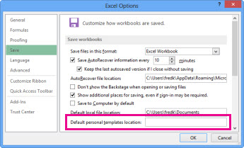
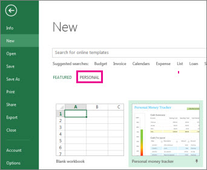

If you often use the same layout or data in a workbook, save it as a template so you can use the template to create more workbooks instead of starting from scratch.
You can use one of your own templates to create a new workbook, or you can use one of the many predefined templates that you can download from Microsoft Office Online.
If you’re saving a workbook to a template for the first time, start by setting the default personal templates location:
Click File > Options.
Click Save, and then under Save workbooks, enter the path to the personal templates location in the Default personal templates location box.
This path is typically: C:\Users\[UserName]\Documents\Custom Office Templates.

Click OK.
Once this option is set, all custom templates you save to the My Templates folder automatically appear under Personal on the New page (File > New).
Open the workbook you want to use as a template.
Click File > Export.
Under Export, click Change File Type.
In the Workbook File Types box, double-click Template.
In the File name box, type the name you want to use for the template.
Click Save, and then close the template.
With the template you created above, you can create a new workbook. This section tells you how to do that.
Click File > New.
Click Personal.

Double-click the template you just created.
Excel creates a new workbook that is based on your template.